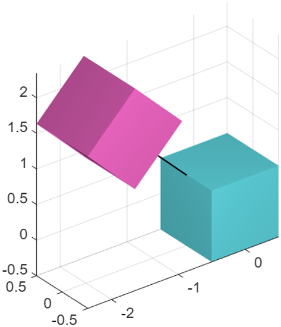

Prismatic joint
Class phx.PrismaticJoint | Superclass: phx.base.Joint
phx.PrismaticJoint realizes a kinematic constraint with one degree
of freedom: a translation along a shared sliding axis. The sliding axis is the local X axis of the
joint frame of each connected body; the remaining five degrees of freedom are locked, so the bodies
keep their relative orientation and slide without rotating.
joint = phx.PrismaticJoint(bodyA,bodyB) creates a joint between two
bodies attached at their origins, with the sliding axis aligned to the local X axis of each body.
Set custom joint frames with TransformA and
TransformB, or the connection points and orientations with
PointA, PointB,
EulerAnglesA and EulerAnglesB; in every
case the sliding axis is the local X axis of each frame.
| Argument | Type | Description |
|---|---|---|
| bodyA, bodyB | phx.Body (scalar) | The two bodies connected by the joint. |
| Property | Type / Default | Description |
|---|---|---|
| TransformA | eye(4) | Homogeneous transformation of the joint frame relative to body A; its local X axis is the sliding axis. |
| TransformB | eye(4) | Homogeneous transformation of the joint frame relative to body B; its local X axis is the sliding axis. |
| PointA | [0 0 0] | Connection point in the local space of body A; the translation part of TransformA (dependent). |
| PointB | [0 0 0] | Connection point in the local space of body B; the translation part of TransformB (dependent). |
| EulerAnglesA | [0 0 0] | Euler angles (z→y→x order) of the joint frame relative to body A; the rotation part of TransformA (dependent). |
| EulerAnglesB | [0 0 0] | Euler angles (z→y→x order) of the joint frame relative to body B; the rotation part of TransformB (dependent). |
| Overlay | false | Draw the joint as an overlay (always on top). |
Reaction feedback (ForceA, TorqueA,
ForceB, TorqueB) and the
MutualCollisions switch (collisions between the connected bodies,
default false) are inherited from
phx.base.Joint.
clf; view(3); axis equal; grid on; camlight headlight; base = phx.Body("Type", "static", "Restitution", 0.5); slider = phx.Body("Position", [-4 0 4], "EulerAngles", [0 pi/4 0], "Restitution", 1); % the sliding axis is the local X of the joint frame; tilting it 45 deg makes % an inclined rail down which the slider slides and rebounds off the base phx.PrismaticJoint(base, slider, "EulerAnglesA", [0 pi/4 0], "MutualCollisions", true); sim = phx.Simulation; sim.step(2, 200, 1); delete(sim);
